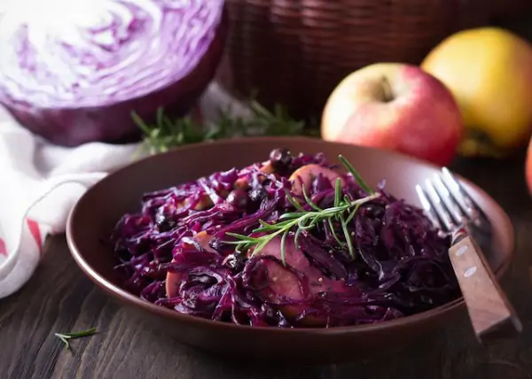

<!--#set var="TITLE" value="Chou rouge aux marrons - Pesce Mignon" -->
<!--#set var="STYLE_PATH" value="../style.css" -->
<!--#set var="HOME_LINK" value=".." -->
<!--#set var="SCRIPT_PATH" value="../" -->
<!--#include virtual="../includes/head.html" -->
<body>
    <!--#include virtual="../includes/header.html" -->
    
    <main>
        <article class="content">
            <h2><span class="en-text">Red Cabbage with Chestnuts</span><span class="fr-text">Chou rouge aux marrons</span></h2>
            <p class="meta"><span class="en-text">Recipe by Jean-Pierre Schlagg</span><span class="fr-text">Recette de Jean-Pierre Schlagg</span> &mdash; <time datetime="2024-11-09">Nov 9, 2024</time></p>
            
            <p><em><span class="en-text">Recipe from Jean-Pierre Schlagg.</span><span class="fr-text">Recette de Jean-Pierre Schlagg.</span></em></p>
            
            <table class="table-meta">
                <tr>
                    <th><span class="en-text">Portions</span><span class="fr-text">Portions</span></th>
                    <th><span class="en-text">Preparation</span><span class="fr-text">Préparation</span></th>
                    <th><span class="en-text">Cooking time</span><span class="fr-text">Temps de cuisson</span></th>
                </tr>
                <tr>
                    <td>3-4</td>
                    <td>1h</td>
                    <td>20 min</td>
                </tr>
            </table>
            
            <figure>
                
            </figure>
            
            <h3><span class="en-text">Ingredients</span><span class="fr-text">Ingrédients</span></h3>
            <ul>
                <li><span class="en-text">1 red cabbage</span><span class="fr-text">1 chou rouge</span></li>
                <li><span class="en-text">1 onion</span><span class="fr-text">1 oignon</span></li>
                <li><span class="en-text">1 apple</span><span class="fr-text">1 pomme</span></li>
                <li><span class="en-text">½ clove garlic</span><span class="fr-text">½ gousse d'ail</span></li>
                <li>marrons</li>
                <li><span class="en-text">red wine</span><span class="fr-text">vin rouge</span></li>
                <li><span class="en-text">cinnamon</span><span class="fr-text">cannelle</span></li>
                <li><span class="en-text">ginger</span><span class="fr-text">gingembre</span></li>
            </ul>
            
            <h3><span class="en-text">Steps</span><span class="fr-text">Étapes</span></h3>
            <ol>
                <li><span class="en-text">Cut the red cabbage in half, remove the core then cut into thin slices</span><span class="fr-text">Couper le chou rouge en deux, enlever le trognon puis en couper de fines lamelles</span></li>
                <li><span class="en-text">Sauté an onion in goose fat or sunflower oil (not olive as it's too flavorful).</span><span class="fr-text">Faire blondir un oignon dans de la graisse d'oie ou huile de tournesol (pas olive car trop gouteux).</span></li>
                <li><span class="en-text">Once golden, add half a clove of garlic.</span><span class="fr-text">Une fois blondi, ajouter la moitié d'une gousse d'ail.</span></li>
                <li><span class="en-text">Add apple quarters (not too small otherwise you won't find them again, you'll have to remove them).</span><span class="fr-text">Ajouter ensuite des quartiers de pommes (pas trop petits sinon on ne les retrouve plus, il faudra les enlever).</span></li>
                <li><span class="en-text">Once the apples have taken on some color, add honey, two good spoonfuls. Caramelize.</span><span class="fr-text">Une fois que les pommes ont pris un peu de couleur, ajouter du miel, deux belles cuillères. Faire caraméliser.</span></li>
                <li><span class="en-text">Add the cabbage and deglaze with a glass of red wine and add 2-3 tablespoons of balsamic vinegar.</span><span class="fr-text">Ajouter ensuite le chou et déglacer avec un verre de vin rouge et ajouter 2-3 cuillères à soupe de vinaigre balsamique brun.</span></li>
                <li><span class="en-text">Let cook until the cabbage is soft and crunchy (45min).</span><span class="fr-text">Laisser cuire jusqu'à ce que le chou soit doux et croquant (45min).</span></li>
                <li><span class="en-text">Add already cooked chestnuts.</span><span class="fr-text">Ajouter des marrons déjà cuits.</span></li>
                <li><span class="en-text">At the very end, mix two tablespoons of flour in a little red wine to thicken the sauce and add to the cabbage. Stir.</span><span class="fr-text">A la toute fin, mélanger deux càs de farine dans un peu de vin rouge pour lier la sauce et ajouter au chou. Remuer.</span></li>
                <li><span class="en-text">Season with salt and pepper. Add cinnamon, chili for kick, even a little ginger.</span><span class="fr-text">Saler et poivrer. Ajouter de la cannelle, du piment pour du peps, même un peu de gingembre.</span></li>
            </ol>
            
            <p class="tags"><a href="../recipes/">#recipe</a> <a href="../tags/alsace/">#alsace</a></p>
        </article>
    </main>
    
    <!--#include virtual="../includes/footer.html" -->
</body>
</html>
